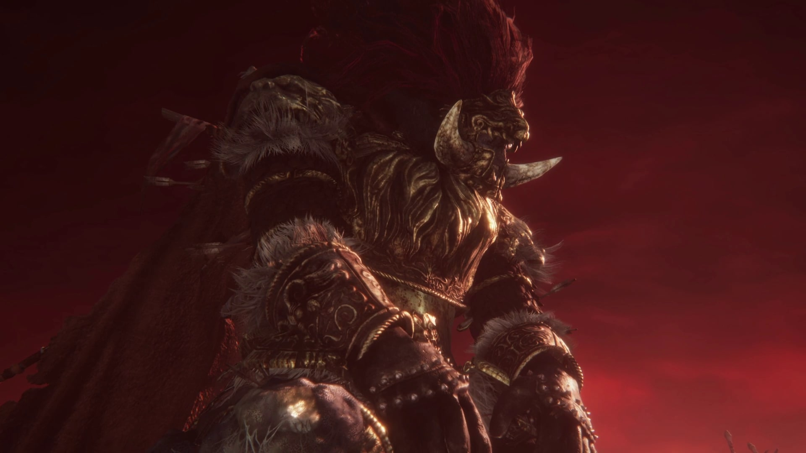

Starscourge Radahn is a boss found in Elden Ring and has attacks: Gravity Arrows, Rain Arrows, Scatter Arrows, Random Slams and Sweeps, Double Slam, Dive Attack, Gravity Step, Quick Swings, Forward Slam, Chasing Slash, Quick Spin, Phase 1.5 Transformation (Cragblade and Gravitas), Cross Dive, Gravity Waves, Collapsing Stars, Phase 2 Transition, Summon Meteors, Spiralling Death